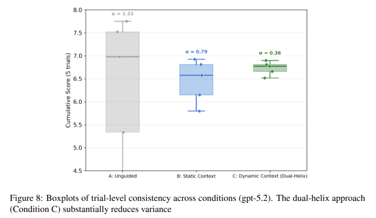

Part I
The Reasoning Pillar:
Dual-Helix Governance
Work in Progress · Under Review
A Dual-Helix Governance Approach Towards Reliable Agentic AI for WebGIS Development
Boyuan Guan, Wencong Cui, Levente Juhász
FIU GIS Center & GATOR Lab, University of Florida
Submitted to Transactions in GIS · Preprint:
arxiv.org/abs/2603.04390
- Open-source toolkit: AgentLoom
- Implemented in a resource-constrained academic lab
- This talk presents the framework + new ablation evidence
Five Structural Failure Modes of LLMs
LLM failures in geospatial engineering are not random — they are predictable, structural, and cannot be solved by scaling alone.
⌖ Context Constraints
Long geospatial workflows exceed the model's context window, causing earlier task specifications to be silently dropped.
⌖ Cross-Session Forgetting
Every new conversation starts with zero memory. Domain knowledge, conventions, and past decisions must be re-established each time.
⌖ Stochasticity
The same prompt can produce different (and incompatible) code on every run — making reproducibility impossible without external constraints.
⌖ Instruction Failure
Complex, multi-step GIS task instructions are partially followed, silently truncated, or reinterpreted in ways that break data pipelines.
⌖ Adaptation Rigidity
Models cannot accumulate project-specific knowledge over time. Every session is a blank slate — there is no learning from past errors.
Guan, B., Cui, W., Juhász, L. (2025). A Dual-Helix Governance Approach Towards Reliable Agentic AI for WebGIS Development. arXiv:2603.04390.
Existing Workarounds & Their Limits
The community has developed partial mitigations, but none address the root structural problem.
✍️ Prompt Engineering
What it does: Carefully crafts instructions to constrain model behavior for a specific task.
⚠ Limit: Fragile, session-scoped, and non-transferable. Prompts do not persist across sessions and must be re-written for every task variant.
📚 Retrieval-Augmented Generation (RAG)
What it does: Fetches relevant documents at query time and injects them into the context window.
⚠ Limit: Only addresses knowledge retrieval — does not enforce behavioral constraints or skill protocols. The agent can still hallucinate, forget task scope, or produce unreproducible outputs.
🎯 Our Argument
These approaches treat symptoms. The five failure modes are structural governance problems — they require an architectural solution, not better prompts or larger retrieval indices.
The distinction: RAG retrieves facts. Governance enforces contracts — what the agent is allowed to know, do, and how it must behave.
→ We propose the Dual-Helix Framework
The Dual-Helix Architecture
🧠 Knowledge Track
Persistent graph of domain facts and project conventions. Solves forgetting.
📋 Behavior Track
Executable protocols defining role-based constraints. Solves instruction failure.
🛠 Skills Track
Domain-specific tool libraries (e.g., precise CRS handling). Ensures correct methodology.
Case Study I: FutureShorelines WebGIS
A real-world refactoring task — transforming a monolithic codebase into production-ready modular architecture.
📋 The Task
Refactor a 2,265-line monolithic JavaScript codebase for a sea-level rise visualization tool into modular ES6 components. Three conditions: Zero-Shot, Static Context, Full AgentLoom.
🏛 The Lab Context
Resource-constrained academic lab. No dedicated ML engineering team. The framework is designed to let a small team achieve production-grade reliability.
Guan, B., et al. (2025). arXiv:2603.04390.
Inside the Graph: Connecting the Nodes
How a specific requirement propagates from a static fact to an executable skill.
1. Knowledge Node
Target CRS = EPSG:3857
The WebGIS platform requires all geometries to be in Web Mercator.
ID: K-CRS-001
2. Behavior Node
Enforce Reprojection
Always check the CRS of inputs. If not EPSG:3857, reproject before any spatial join.
ID: B-CRS-001
← K-CRS-001
3. Skill Node
reproject_gdf()
An executable Python tool that safely transforms GeoDataFrames using pyproj.
ID: S-CRS-001
← B-CRS-001
Result: The agent knows the rule, is instructed to follow it, and has the code to execute it.
Governance Drives Code Quality
Structural constraints significantly improve both maintainability and consistency.
Cyclomatic Complexity
↓ 51% reduction
Maintainability Index
↑ 7 points
Consistency Guarantee
Variance reduction is statistically significant (p = 0.047 vs. Zero-Shot baseline). This is empirical evidence that structural governance, not model scale, drives reliability.

Fig 8: Trial-level consistency across conditions (gpt-5.2).
Case Study II: COVID-19 Risk Mapping
Ablation study on spatial join and normalization workflows.
Baseline
Unguided Agentic AI
(without AgentLoom)
− Skills
Knowledge + Behavior only
− Behaviors
Knowledge + Skills only
− Knowledge
Behavior + Skills only
Full AgentLoom
All three tracks active
📍 The Task: Miami-Dade COVID-19 Risk Mapping
Input:
32,264 COVID-19 case points + 1,583 census block groups
Task:
Spatial join → normalize rates → build interactive WebGIS dashboard
Evaluation:
5-criterion rubric (0–2 per criterion) across 3 independent evaluator runs
Mooney, P., Juhász, L. (2020). Mapping COVID-19: How web-based maps contribute to the infodemic. Dialogues in Human Geography.
Ablation: Skills are the Load-Bearing Column
Task: Miami-Dade COVID-19 Risk Mapping. Scored on 5 rigorous GIS criteria (0-2 scale).
Governance IMPROVES Quality
Full AgentLoom (83%) vs Baseline (40%).
Skills = Critical Element
Removing Skills caused the largest drop — executable spatial protocols matter most.
Only Full AgentLoom consistently handled spatial uncertainty (MAUP, low-pop suppression).